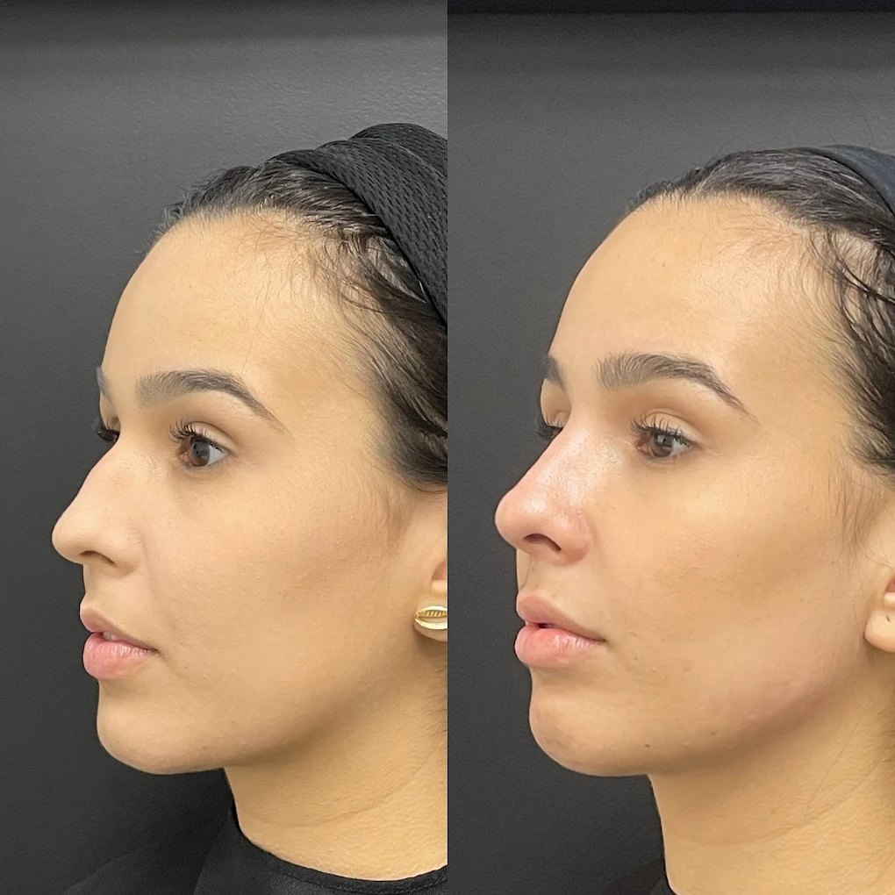

Instituto Samantha Vitale
Estética avançada que valoriza a sua beleza com naturalidade.
Tratamentos personalizados em harmonização facial e estética avançada, conduzidos com técnica, cuidado e atenção às características de cada paciente.
Dra. Samantha Vitale
Técnica, experiência e um olhar individual para cada paciente.
Na estética, cada rosto possui características, proporções e necessidades únicas. Por isso, cada atendimento começa com uma avaliação cuidadosa e individualizada.
A Dra. Samantha Vitale atua com foco em harmonização facial e estética avançada, buscando unir conhecimento técnico, planejamento e naturalidade em cada tratamento.
- Dra. Samantha Vitale
- Especialista e Mestre em Harmonização Facial
- CRO-SP 83490
- Criadora do Protocolo VitaleSkin
- Speaker Dermadream
Tratamentos
Tratamentos pensados para diferentes necessidades.
Cada tratamento é definido após uma avaliação individualizada, considerando características, necessidades e objetivos de cada paciente.
- 01 Harmonização Facial Planejamento individualizado que busca equilíbrio e naturalidade nas proporções faciais.
- 02 Toxina Botulínica Aplicação técnica orientada pela avaliação individual de cada paciente.
- 03 Preenchimento Facial Procedimentos planejados considerando as características individuais de cada rosto.
- 04 Bioestimuladores de Colágeno Indicação avaliada individualmente conforme as necessidades de cada paciente.
- 05 Tratamentos Faciais Cuidados complementares definidos a partir da avaliação profissional.
- 06 Protocolos Personalizados Combinações de tratamentos planejadas de acordo com o objetivo de cada paciente.
Protocolo exclusivo
Um protocolo criado pela Dra. Samantha Vitale.
O VitaleSkin é um protocolo desenvolvido pela Dra. Samantha Vitale, que reúne sua experiência técnica em harmonização facial e estética avançada em uma abordagem própria de atendimento.
Cada indicação dentro do protocolo é definida de forma individualizada, a partir da avaliação das características e dos objetivos de cada paciente, sempre conduzida pela equipe do Instituto Samantha Vitale.
Conhecer o Protocolo VitaleSkinResultados
Resultados que respeitam identidade e naturalidade.
Cada tratamento é planejado considerando as características e os objetivos individuais de cada paciente.

Antes DepoisOs resultados podem variar de acordo com as características e condições individuais de cada paciente.
Nosso cuidado
Uma experiência pensada em cada detalhe.
Avaliação individualizada
Cada atendimento começa entendendo as características, necessidades e objetivos do paciente.
Planejamento personalizado
Os tratamentos são definidos individualmente após avaliação profissional.
Naturalidade como princípio
Uma abordagem que busca valorizar características individuais sem excessos.
Acompanhamento próximo
Orientação e cuidado durante as diferentes etapas do tratamento.
 O Instituto Samantha Vitale
Foto da recepção em breve
O Instituto Samantha Vitale
Foto da recepção em breve
O Instituto
Um espaço preparado para receber você.
Um ambiente pensado para proporcionar conforto, privacidade e uma experiência de atendimento cuidadosa desde a chegada.
Instituto Samantha Vitale
R. Joaquim Floriano, 466 - Conj. 704Itaim Bibi
São Paulo - SP
04534-002
Horário
Segunda a sexta
08:00 às 18:00
Sábado e domingo
Fechado
Experiências
O que dizem nossos pacientes.
-
★★★★★
"[Depoimento de paciente — substituir por avaliação real do Google]"
-
★★★★★
"[Depoimento de paciente — substituir por avaliação real do Google]"
-
★★★★★
"[Depoimento de paciente — substituir por avaliação real do Google]"
Dúvidas frequentes
Antes de agendar, tire suas dúvidas.
A avaliação permite conhecer suas características, necessidades e objetivos antes de orientar sobre as possibilidades de tratamento.
A indicação depende das características e necessidades de cada paciente. Durante a avaliação, a profissional poderá explicar as possibilidades adequadas ao seu caso.
Sim. Entre em contato pelo WhatsApp para tirar dúvidas sobre atendimento, procedimentos e disponibilidade.
Clique em um dos botões de WhatsApp disponíveis no site e converse diretamente com nossa equipe.
O Instituto está localizado na R. Joaquim Floriano, 466 - Conj. 704, Itaim Bibi, São Paulo - SP.
O atendimento acontece de segunda a sexta-feira, das 08:00 às 18:00.
Seu cuidado começa com uma conversa.
Converse com nossa equipe, tire suas dúvidas e agende uma avaliação no Instituto Samantha Vitale.
Agendar avaliação pelo WhatsApp